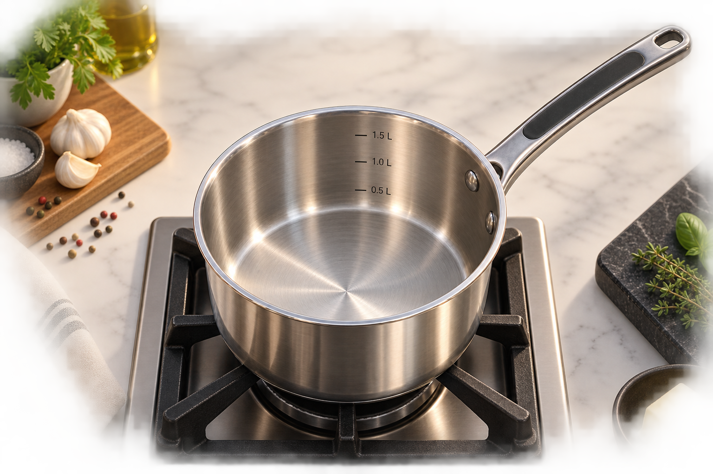

🧪 CuliLab
CHEF ACADEMY • LEER → ONTDEK → BEHEERS
👩🍳 Lv. 2
⭐ 225 XP
🪙 120
🏅 0
Béchamel leren
De chef helpt je één keer. Daarna sta je er zelf voor.

🔥
👨🍳 Chef: Begin met melk. Ik laat je deze ronde zien waarom.
Maak een gladde béchamel
Tutorial • stap 1 van 3
Ingrediënt
Temperatuur
Techniek
Volg de chef tijdens je eerste bereiding.